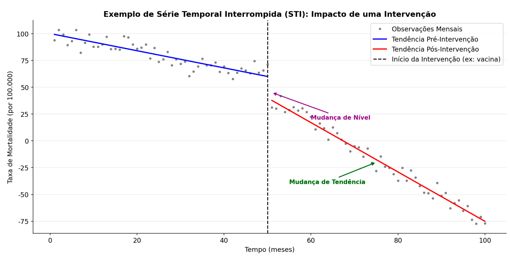

Módulo 2 | Aula 2
Séries Temporais - Introdução aos Modelos
Séries Temporais Interrompidas (STI)
A Análise de Séries Temporais Interrompidas (STI), ou Interrupted Time Series (ITS) analysis, é um dos desenhos de estudo quase-experimentais mais fortes para avaliar o impacto de intervenções em nível populacional (SCHIAVON et al., 2019) (SILVA et al., 2020). Este método é particularmente útil em saúde pública para responder a perguntas como: "A introdução de uma nova vacina reduziu a incidência da doença?"
As séries temporais interrompidas são fundamentais na saúde pública porque permitem avaliar intervenções que não podem ser estudadas por ensaios clínicos randomizados. Esse método analisa como um indicador se comporta antes e depois de uma mudança específica, sendo útil para avaliar impactos de vacinas, políticas regulatórias e medidas adotadas em emergências sanitárias, como na pandemia de COVID-19.
Também é amplamente usado para examinar efeitos de mudanças na organização dos serviços de saúde e para apoiar a vigilância epidemiológica, ajudando a identificar surtos ou medir resultados de ações de controle.
Apesar de sua utilidade, a interpretação dos resultados exige cautela, pois outros eventos simultâneos podem influenciar as tendências. No conjunto, as séries temporais interrompidas transformam dados rotineiros em evidências robustas para planejar, monitorar e avaliar políticas e intervenções em saúde pública (WORLD HEALTH ORGANIZATION, 2010).
O desenho da STI utiliza uma série de observações ao longo do tempo, coletadas antes e depois de uma intervenção em um ponto bem definido (a "interrupção"). A análise avalia se houve uma mudança estatisticamente significativa na série após a intervenção, testando duas possíveis mudanças:
Um salto ou queda imediata no valor da série logo após a intervenção.
Uma mudança na inclinação (aceleração ou desaceleração) da série após a intervenção.
Figura 3 – Representação esquemática de uma Análise de Série Temporal Interrompida

Fonte: Elaborado pelo autor (2026).
A Figura 3 simula o impacto de uma intervenção (como a introdução de uma vacina) na taxa de mortalidade por uma doença. Os pontos representam os valores observados da taxa de mortalidade por 100.000 habitantes ao longo de aproximadamente 100 meses.
Antes da intervenção (à esquerda da linha vertical tracejada), a linha azul mostra que a taxa de mortalidade já apresentava uma tendência de queda gradual. Isso representa o comportamento esperado da série se nada tivesse mudado.
A linha vertical preta indica o ponto exato em que ocorreu a intervenção — por exemplo, o início de uma campanha de vacinação. É o marco que divide a série em período pré-intervenção e período pós-intervenção.
Imediatamente após, observa-se uma queda abrupta na taxa de mortalidade. Esse salto para baixo é chamado de mudança de nível, indicando um efeito imediato.
Após a intervenção, a linha vermelha mostra que a taxa de mortalidade continua caindo, mas agora com inclinação mais acentuada do que antes. Ou seja, além da queda imediata, a tendência se torna mais forte.
A diferença entre a inclinação pré-intervenção (azul) e pós-intervenção (vermelha) representa a mudança de tendência. Isso indica que a intervenção não só gerou um efeito imediato, mas também alterou o ritmo da redução ao longo do tempo. A grande vantagem da STI é sua capacidade de controlar a tendência pré-existente, tornando a inferência sobre o efeito da intervenção mais robusta (SCHIAVON et al., 2019) (SILVA et al., 2020).